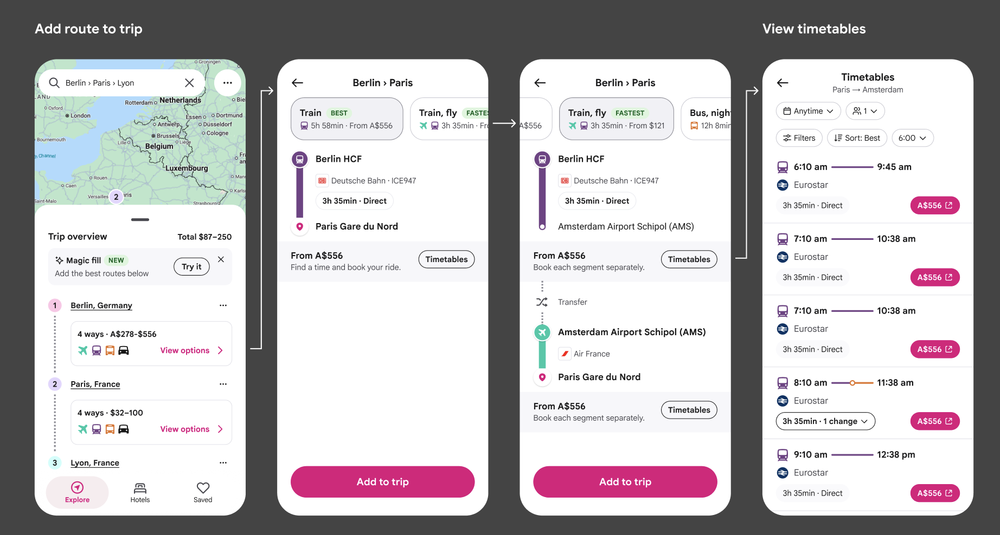
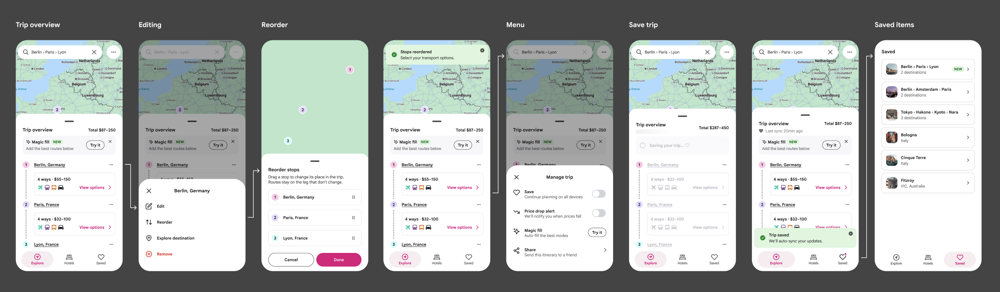
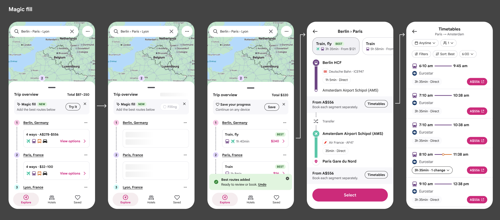
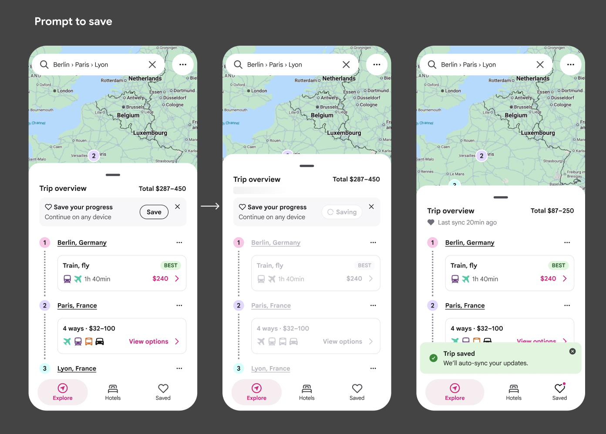

Rome2Rio · 2026
People planning journeys with several stops had to leave the product and piece the legs together themselves. I brought multi-stop search into Explore so they can plan and compare a whole journey without leaving the view.
My role
Product Design Lead
Outcome
Consolidated multi-leg workflow into core product
Method
Usability testing, iterative design
Today's trip planner walks people through a single straight line, so planning a journey with several legs means leaving Explore and working out each leg by hand. You can't see all the legs at once or compare transport modes across the whole trip. Nothing is saved either so people who want to come back to a trip idea have to start again.

The trip planner worked fine but it was in the wrong place. If multi-stop lives in Explore people can see the whole journey, change it there and save it with the other things they collect for a trip like accommodation or attractions. The MVP only moves where multi-stop results appear and leaves the core logic as it is.

Trip Overview. A short view of all the legs at once with start and end points, mode icons and the duration and price of each leg. People can see their whole journey and spot the most expensive or slowest leg straight away.
Inline destination editing. Each destination row responds on hover with a remove button, a drag handle and an Add a stop option below the timeline. People can rebuild their trip without leaving the results.
Mode selection panel. A second panel lists the available routes for each leg with a breakdown by mode. Suggest options fills in the recommended combination across every leg at once.
Persistent Save CTA. A labelled button in the sticky footer replaces the icon so saving is clear and always in view while people scroll through options.

"Bringing multi-stops into our core product meant moving a workflow, not building a new one. People show you where they expect to interact."
Multi-destination search is the starting point. Over time the trip planner menu can become a personal home for saved travel plans, whether that's a full multi-stop itinerary, a single route or a collection of destinations. Airbnb lets people save and review things as part of planning a trip in much the same way. Rome2Rio would move from a search tool to a place where people build their trips.
